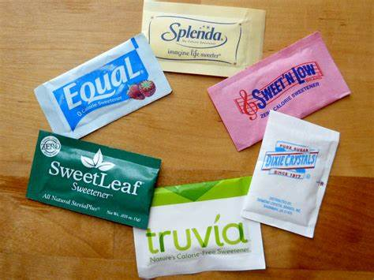

El Gobierno del dimisionario Costa aprueba subir el salario mínimo y alzas para todos los funcionarios en plena crisis política. El Gobierno de Portugal aprobó este jueves la subida del salario mínimo hasta los 820 euros y una actualización de los sueldos de los funcionarios a partir de enero de 2024, en plena crisis política por la dimisión del socialista António Costa como primer ministro. Las medidas, que ya se conocían, fueron aprobadas por decreto ley en Consejo de Ministros, informó el Ejecutivo en un comunicado.
Google actualizará todas las semanas su navegador Chrome para evitar los fallos de seguridad: La compañía eliminará su Archivo de Álbumes que lleva un tiempo en desuso.Google Chrome.Brett Jordan de Pexels Google, ante el desafío creciente de vulnerabilidades no corregidas, ha optado por pasar de un programa de actualizaciones cada dos semanas a uno semanal. Esta modificación tiene como objetivo enfrentar las amenazas un tiempo prolongado para explotar debilidades conocidas como fallos de día cero. Por si no lo sabías, el fallo de día cero se refiere al método o técnica que utilizan los hackers para aprovecharse de una vulnerabilidad y ejecutar el ataque, y una vez que la vulnerabilidad de día cero se ha hecho pública, se conoce como vulnerabilidad de 'día n-day' o de un día.
La polémica de los edulcorantes y las bebidas 'cero' en Nutri-Score: ¿Son alimentos sanos? Nutri-Score ha recibido numerosas críticas desde su adopción en Francia. Este etiquetado frontal, de aplicación voluntaria en España desde 2021, ha sido revisado por segunda vez. En esta ocasión, para las bebidas. E incluye novedades interesantes. 
La renovada aplicación de AUVASA permite recargar los títulos desde el móvil y geolocalizar los buses en tiempo real: AUVASA presenta AuvasaPay, su APP renovada para unificar todos los servicios disponibles.AUVASA presenta AuvasaPay, su APP renovada para unificar todos los servicios disponibles.AYTO. DE VALLADOLID Dentro del proceso de actualización y mejora de los servicios ofrecidos, AUVASA (Autobuses Urbanos de Valladolid S.A.) ha presentado una aplicación móvil completamente renovada para ofrecer a la ciudadanía una experiencia más integradora, accesible y completa. La reciente renovación tecnológica a bordo de los autobuses ha permitido dotar a la App de nuevas funcionalidades, de este modo ofrece un servicio completo y facilita al usuario la planificación de su desplazamiento, así como la gestión de compra de todos los títulos de viaje dentro de una única aplicación.